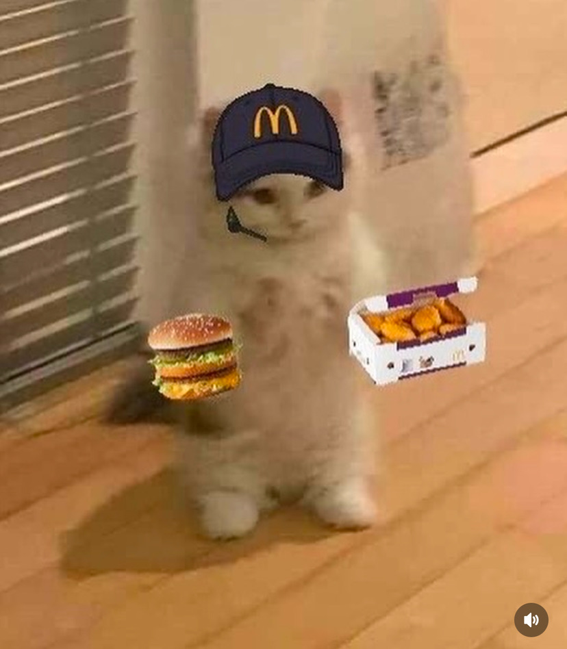

Cesargw121 (Cesar)
 Cesar Twitter
Cesar Twitter
Hi 👋, I'm César, Nonix's administrator and friend. I'm a
bit reserved and don't usually talk much.
About me: I'm from Peru 🇵🇪. I personally don't play many games beyond Cities: Skylines, Phasmophobia, Euro Truck, and of course, playing with Nonix and the rest of the team. I like Chinese and Peruvian food, and Inca Kola.
About me: I'm from Peru 🇵🇪. I personally don't play many games beyond Cities: Skylines, Phasmophobia, Euro Truck, and of course, playing with Nonix and the rest of the team. I like Chinese and Peruvian food, and Inca Kola.

Katzuna
Hi, I'm Katzuna, one of the Administrators of the YouTube
channel, one of the Owners of the Discord server, and a
friend of Nonix.
When it comes to moderation, I like when people follow the rules; if there are clear rules, I'll do everything possible to ensure everyone adheres to them strictly (although I try not to come across as too severe so that no one feels uncomfortable speaking in chat when I'm around).
And about me: I'm from Chile, and I speak Spanish and English (although I prefer Spanish). I enjoy playing video games like Minecraft (especially doing stuff with commands and datapacks), Geometry Dash, Phasmophobia, Ultrakill, The Binding of Isaac, Celeste, Undertale/Deltarune, and, on rare occasions, Fortnite and PUBG (only with my friends, as I don't really like that kind of game). I also like subjects such as maths, chemistry, and physics, among others. I'm not really a fan of listening to music or watching series or movies. I consider myself a pretty boring and bad-tempered person, although I'm trying to change. I really don't like using my voice, so if you see me in a voice channel or something similar, don't expect me to speak. I prefer using a bot that reads what I write.
When it comes to moderation, I like when people follow the rules; if there are clear rules, I'll do everything possible to ensure everyone adheres to them strictly (although I try not to come across as too severe so that no one feels uncomfortable speaking in chat when I'm around).
And about me: I'm from Chile, and I speak Spanish and English (although I prefer Spanish). I enjoy playing video games like Minecraft (especially doing stuff with commands and datapacks), Geometry Dash, Phasmophobia, Ultrakill, The Binding of Isaac, Celeste, Undertale/Deltarune, and, on rare occasions, Fortnite and PUBG (only with my friends, as I don't really like that kind of game). I also like subjects such as maths, chemistry, and physics, among others. I'm not really a fan of listening to music or watching series or movies. I consider myself a pretty boring and bad-tempered person, although I'm trying to change. I really don't like using my voice, so if you see me in a voice channel or something similar, don't expect me to speak. I prefer using a bot that reads what I write.

Darwin/Drwn
Once upon a time, there was a man named Nodarwin. He saw a
cartoon called "The Amazing World of Gumball." Since his
favorite character is Darwin, he gave himself that username,
and that's what they call him today. Most importantly, I
like Pastel de papa.

Elias
Hi I'm Elias, mod of Nonix. About me: I'm from Argentina,
and I speak Spanish and English. I don't play many games bcs
my trash PC and I'm so dumb I spent my money on gambling and
an air fry whatever is spelled. Addict to Osu, travestis,
Tboi and Geometry Dash porn. I like Mandarina, travestis,
trans, furrys, sisters and I hate school.

Joaco
Hey there! I'm Joaco, I don't really have a role assigned
here, but let's just say I'm Nonix's dev, and IRL friend.
I'm from Chile 🇨🇱, so of course I speak Spanish, but I also speak English, a little bit of German and know some words in Latin.
As far as programming goes, I love C, started with Java, hate weakly typed languages (too easy tbh) and really like long projects (they keep me entertained).
For gaming I really enjoy games that are chill, shooters, or scary. A few of the games I play include Valorant, MC, R.E.P.O., Phasmophobia and Lethal Company.
Some of my hobbies are: programming, listening to music, gaming, watching shows, and designing circuits.
And some of my favourite conversation themes are: math (mostly algebra and trig), physics, anything related to politics, data science (anything related to science tbh), and games.
If you'd like to talk then hit me up with a message! I'll be happy to respond.
I'm from Chile 🇨🇱, so of course I speak Spanish, but I also speak English, a little bit of German and know some words in Latin.
As far as programming goes, I love C, started with Java, hate weakly typed languages (too easy tbh) and really like long projects (they keep me entertained).
For gaming I really enjoy games that are chill, shooters, or scary. A few of the games I play include Valorant, MC, R.E.P.O., Phasmophobia and Lethal Company.
Some of my hobbies are: programming, listening to music, gaming, watching shows, and designing circuits.
And some of my favourite conversation themes are: math (mostly algebra and trig), physics, anything related to politics, data science (anything related to science tbh), and games.
If you'd like to talk then hit me up with a message! I'll be happy to respond.